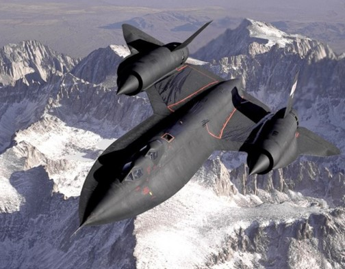

The Lockheed SR-71 "Blackbird" is a long-range, high-altitude, strategic reconnaissance aircraft developed and manufactured by the American aerospace company Lockheed Corporation. It was operated by both the United States Air Force (USAF) and NASA.
The SR-71 was developed as a black project from the Lockheed A-12 reconnaissance aircraft during the 1960s by Lockheed's ‘Skunk Works division. American aerospace engineer Clarence "Kelly" Johnson was responsible for many of the aircraft's innovative concepts. The shape of the SR-71 was based on that of the A-12, which was one of the frst aircraft to be designed with a reduced radar cross-section. At one point, a bomber variant of the aircraft was under consideration, before the program ‘was focused solely on reconnaissance. Mission equipment for the reconnaissance role included signals intelligence sensors, a side-looking airborne radar, and a photo camera; the SR-71 was both longer and heavier than the A-12, allowing it hold more fuel as well as a two-seat cockpit. The SR-71 designation has been attributed to lobbying efforts by USAF Chief of Staff General Curtis LeMay, who preferred the SR (Strategic Reconnaissance) designation over simply RS (Reconnaissance). The aircraft was introduced to operational service in January 1966.